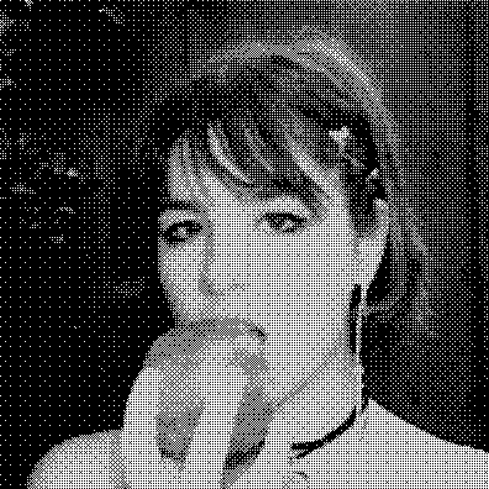

saskia ★ robin
Saskia Robin is a singer, guitarist and songwriter who takes most of her inspiration from her parents' 90s CD collection. Her sound, earning comparisons to Hole, PJ Harvey and Olivia Rodrigo, captures a unique blend of guitar, candidly raw vocals, and lyrics that hit a little too close to home.
Find on: Spotify | Apple Music | Bandcamp | More...